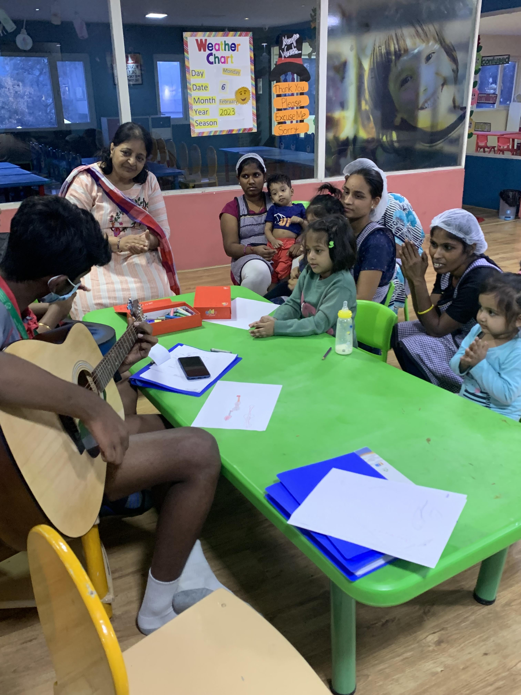
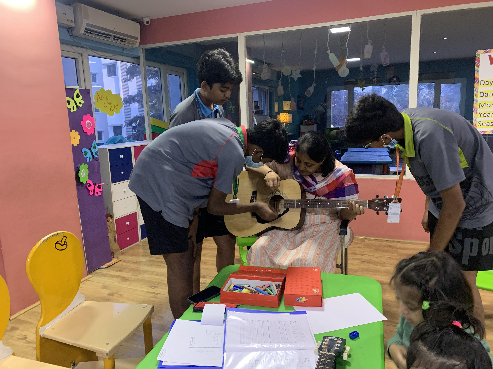
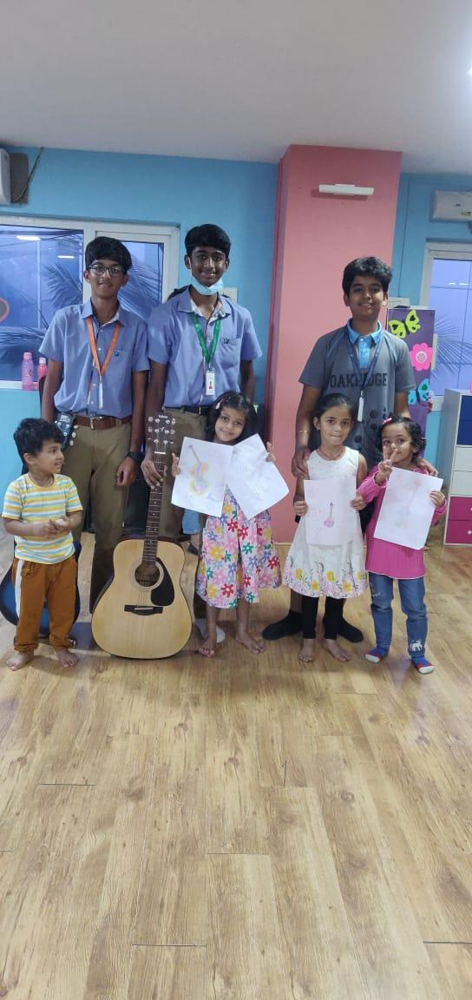
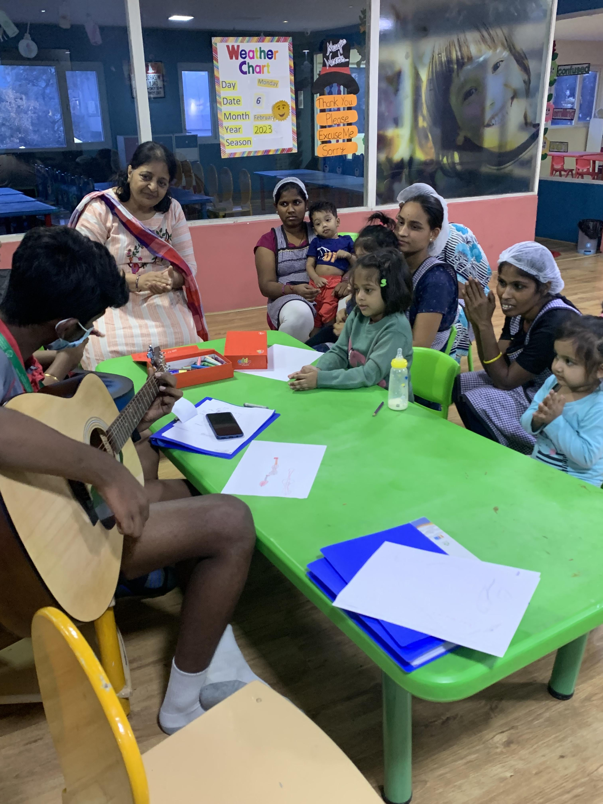
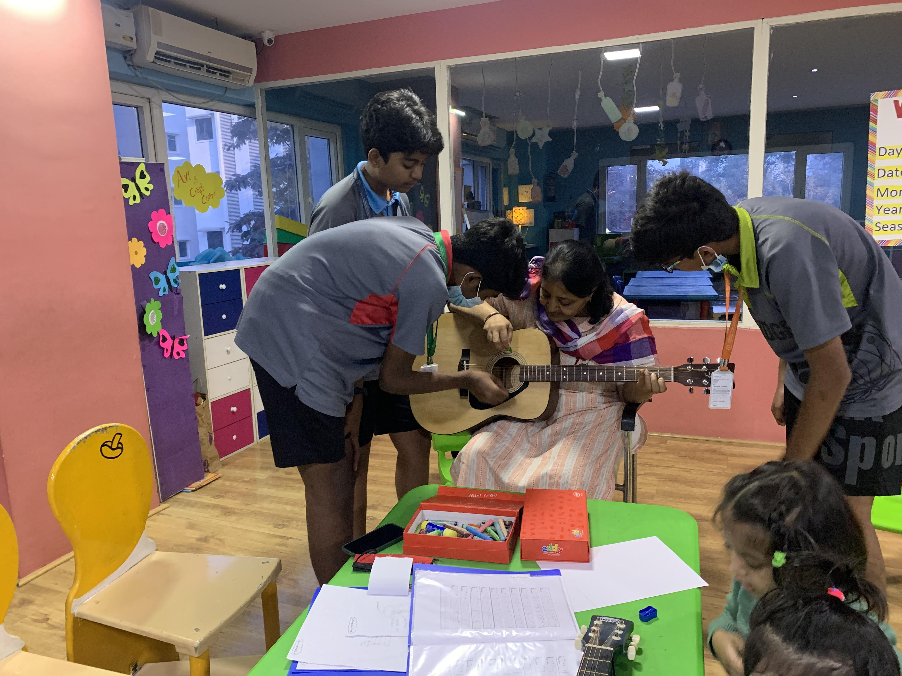
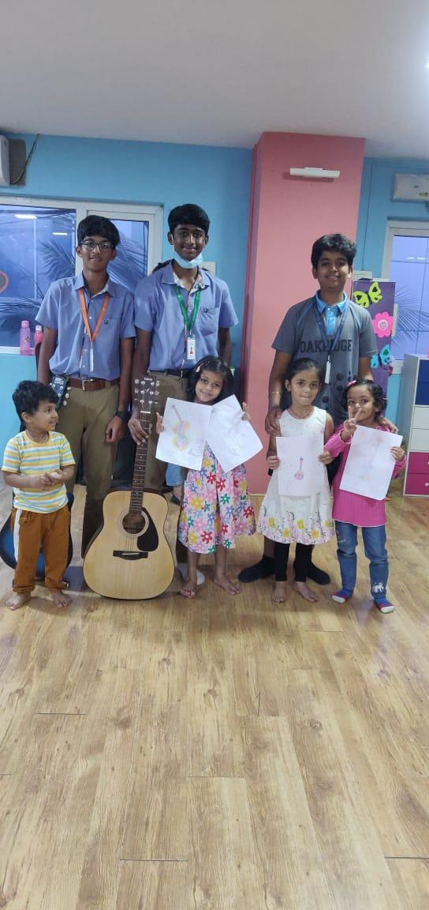

Our Work
Planning


Taking Action



We are a community project aimed at teaching little kids at a daycare center how to play guitar. Our mission is to provide extracurricular activities that are often overlooked and undervalued. We noticed that the children at the daycare centre were very interested in the guitars; they were focused on the task at hand and allowed for free interaction. Despite the fact that the children had little musical experience, the sight of the guitars definitely excited them and drew their attention to us. Because our project is centred on music and instruments, the children were both auditory and visual learners.
At Tuning Initiative, we believe that every child deserves the opportunity to explore their creativity and learn new skills. We are a group of friends who are passionate about music and giving back to our community. We noticed that in many daycare centers, extracurricular activities, especially music, are not considered. So, we decided to start our own project called Tuning Initiative.
The main service provided was teaching guitar to the little kids at the daycare center. The program was designed to be fun, interactive and engaging for the children. It was also focused on providing a positive and encouraging environment for the children to learn and develop their musical skills.
We offer guitar lessons for kids at the daycare center. We are passionate about sharing their knowledge with the next generation of guitarists.
Did you know that many schools and daycare centers have cut back on extracurricular activities in recent years? According to a recent study, 75% of schools have reduced time spent on arts education, while 95% of daycare centers do not offer any music education at all. At Tuning Initiative, we believe that music education is crucial for children's development, and we are committed to providing this opportunity to as many kids as possible. According to recent studies, only 20% of daycare centers offer music lessons to children. We believe that every child should have the opportunity to learn and enjoy music.



If you have any questions or would like to get involved with Tuning Initiative, please don't hesitate to contact us. You can reach us by email at info@tuninginitiative.com.